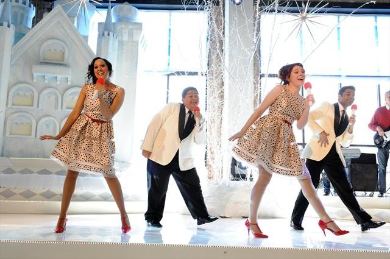
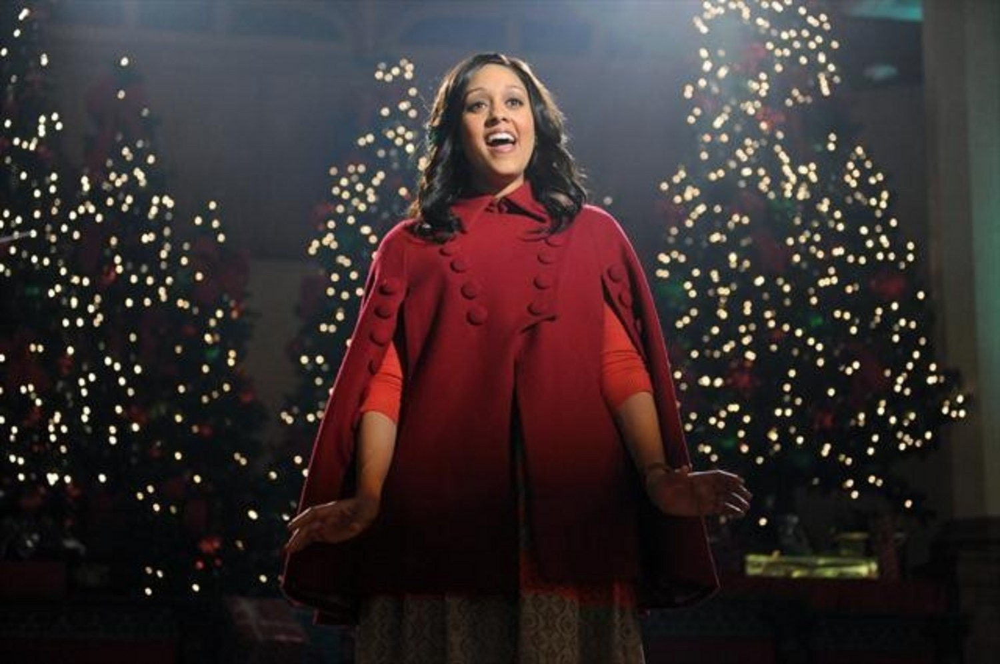

THE MISTLETONES
| Titre québécois | Les princesses des neiges |
| Réalisation | Paul Hoen |
| Acteurs principaux | Tia Mowry Tori Spelling Johnathan Patrick Moore |
| Société de production | American Broadcasting Company (ABC) |
| Sortie | 2012 |

/5 étoiles


Jessica Ehlers | le 21 novembre 2021
Les admirateurs de musique de Noël doivent regarder le téléfilm musical THE MISTLETONES maintenant disponible sur Disney+. Ce film de 2012 comprend tant de chants de Noël incroyable que vous aurez envie de fredonner avec les acteurs.
Holly (Tia Mowry) souhaite rejoindre les Snow Belles, la chorale de Noël la plus exclusive de la ville. Cependant, Marci (Tori Spelling), la dirigeante du groupe, passe sur Holly en faveur de son amie. Étonnée par la réjection, Holly décide de créer son propre groupe, les Mistletones, afin de défier les Snow Belles dans un concours musical. En préparant ses coéquipiers, Holly demande l’aide de Nick (Jonathan Patrick Moore), son patron charmant avec une passion secrète pour la musique.
Holly et les Mistletones participent au concours de chant.
La meilleure partie de THE MISTLETONES est la musique. Plusieurs comédies romantiques incluent les chants de Noël. Donc, le film n’a rien d’exceptionnel à inclure des chansons festives. Cependant, la musique de ce film est vraiment formidable grâce à la façon dont les producteurs l’ont arrangée. La bande originale du film comprend 13 chants de Noël remixé avec de belles harmonies et des rythmes modernes. J’aime sa version de « 12 jours de Noël » le plus, mais toutes les chansons vous feront sourire. J’ose même dire que ceux qui ne sont pas typiquement des admirateurs de chants de Noël apprécieront la musique de ce film.
Bien sûr, je m’en voudrais de ne pas mentionner l’incroyable performance de Tia Mowry, qui joue le rôle d’Holly. Je connaissais l’actrice du téléfilm Twitches et je ne l’avais jamais entendue chanter. Pour cette raison, j’étais un peu étonnée de voir l’actrice dans une comédie musicale. Pourtant, la belle voix de Tia Mowry m’a surprise. J’avais hâte à la voir chanter chaque fois qu’une chanson commence.
Tia Mowry, qui joue Holly, chante bien.
Somme toute, je recommande THE MISTLETONES pour une soirée de film amusante cette saison de Noël. Le film est une comédie romantique musicale qui vaut la peine de regarder. Surtout les admirateurs des chansons festives aimeront ce film parce que la musique est incroyable. Cela étant dit, qu’il soit admirateur de la musique de Noël ou non, vous apprécierez cette comédie romantique.
Cliquez ici pour voir la bande-annonce de The Mistletones.
Voulez-vous lire d’autres critiques de films ? Cliquez ici pour voir les critiques d’autres comédies romantiques de Noël.